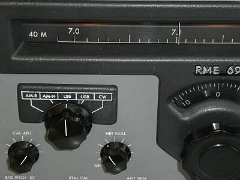
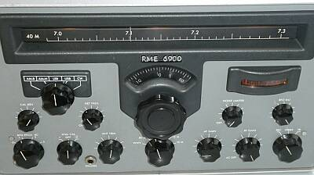
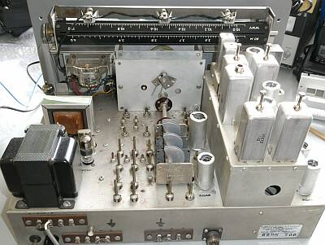
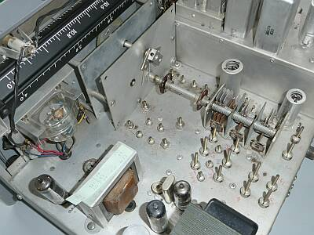
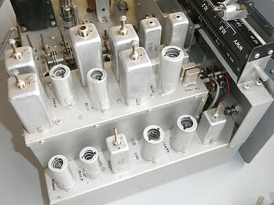
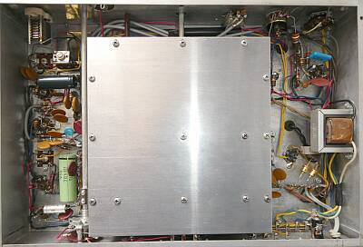
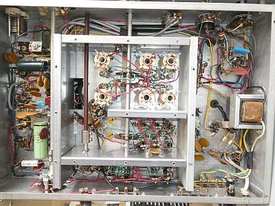
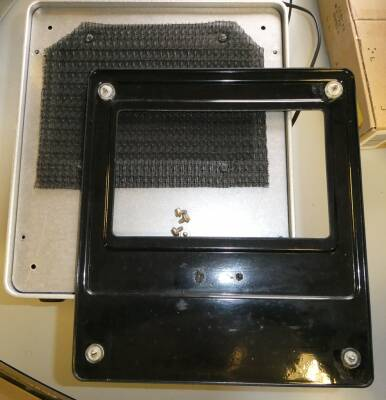
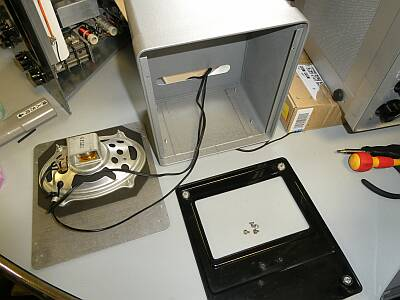
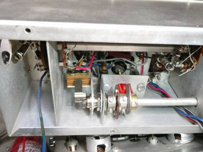

 |
モード切替部はとても目につきます
０～１００目盛のスケールダイヤルは、メインダイヤルから１/３に減速（メインダイヤルおおよそ３回転で１回転します）されていますが、直接周波数の読み取りには使えません
単にスケールです
このあたりは同じダブルスーパーヘテロダイン方式でもコリンズタイプとの違いです
が、このデザインは、もしかしたらコリンズ製品を意識したものなのかもしれません
ＣＡＬ ＡＤＪは、横ダイヤルのカーソル位置合わせ用です
|
 |
フロントパネル メインノブは、社外品です
当時、はやっていたのでしょう、同じ時代によく見たつまみが使われています
Sメーターは、横スケールのものが採用されています
横行ダイヤルに横スケールのメーターです
ダイヤルスケールですが、当時どれだけの周波数範囲が、どれだけの長さに展開されるか、と表示されていた例が多かったと思います
１KHｚ直読とかいう表現とも異なります |
 |
シャーシ上面 リアから |
 |
シャーシ上面 サイドから
オシレータ部 ＶＣは裸・・です
コイルはシャーシ下でばっちりシールドされています
中央下に見えているクリスタルは、マーカー／１００ＫＨｚです |
 |
シャーシ上面 もう片方のサイドから
サブシャーシに乗っているのは、１ｓｔ-IF ２．１９５MＨｚからの変換部以降、５７KHｚのＩＦ部です
見えている２個のクリスタルは、その変換のためのもので、ＬＳＢ／ＵＳＢの切り替えを行います |
 |
シャーシ底面
中央にはシールドされた大きなエリアが |
 |
シールドケースを開けた状態です
安定度＝メカの頑丈さ
といった内容ですね |
|
 |

やっと分解できました
２本用意してあった接続ケーブル
そのうちの1本、Ｙ型端子がついたケーブルがＢＯＸ内に納めてあり、その端子同士が時々接触していました
左上に見えているのは、Ｇｏｎｓｅｔ ＧＳＢ-１００ |
貴重な純正スピーカーかと思います（ＲＭＥ６９０１）
入手した時点で、時々ガリガリ接触不良を起こしたような受信音がします
その様子を確認したいと分解をしようとして、一体どうやったらスピーカーユニットに手が届く？・・・全く分かりません
恐る恐る試みると、樹脂製のフロントカバー？が、四隅の4本のノッチで、フロントパネルに差し込んでありました
フロントカバーを外すと、ビス4本でフロントパネルがケースに取り付く構造でした
分かってしまえば・・・ Y型端子付きのものと、RCAプラグ付きのもの2本のケーブルはそのままにしました |
|
ＳＳＢの受信には何も問題はありませんでしたが、CW受信の様子に違和感がありました
感度が低いことと、ＴｰＮｏｔｃｈが効かない・・・
感度が得られていなかった原因は、予測通りＩＦＴの同調ずれ
違和感があったのは、CW時のＡＧＣは「ＯＦＦ」であること（そういう設計…感度重視？後述）
最終的に得られた受信感度について
いずれもS/N １０ｄＢが得られる条件です
|
ＳＳＢ 信号ON/OFF |
ＡＭ 30%変調 ON/OFF |
ＣＷ 信号ON/OFF |
| ７.１０ＭＨｚ |
０.２μＶ |
０.７μＶ |
手動 ０.０７μＶ |
| １４.１５ＭＨｚ |
０.１５μＶ |
０.７μＶ |
|
| ２１.２０ＭＨｚ |
０.２μＶ |
０.７μＶ |
|
参考：ＣＷ受信について、ＡＧＣ/ＯＦＦ（デフォルト）、ＢＦＯ注入レベルもフロントパネルから調整という条件ですが、なんとS/N １０ｄＢを得られる信号入力は７ＭＨｚの例で、０.０７μＶです
何もノイズや混信がない状態で受信をするということは、現実ではまずありませんが、それにしてもその気になれば感度が取れるということです
ＢＦＯの周波数もフロントパネルから可変できます
１１５Ｖで動作させることで、周波数ドリフトについても、最初のＡＣ１００Ｖ動作時に比べ、そんなに気にならなくなりました（～２１ＭＨｚ帯 もちろん最近マシンの比ではありません、動きます！）
 |
こちらがＩＦブロック（サブシャーシ）の中身です
配線3本を外して無理やり中を覗いています
シャフトがＴｰＮｏｔｃｈで、フロントパネルから直接回す仕組みです
１本のシャフトにカムが二つ
奥（左）のカムがノッチＬをショート（バイパス）する接点
赤い部分を押すカムがもうひとつ
赤い部分の先は、ノッチＬのダストコアに直結
すなわちカムの動きで、ダストコアを出し入れ（上下）する仕組みです
よく考えられています |
問題のあったＴｰＮｏｔｃｈですが、物理的に狭くなっていたダストコアの可動範囲を元の状態であろう姿に戻すことで、それなりの動作をするようになりました
ノッチの深さですが、おおよそ最大で２６ｄB程度の減衰が得られました |